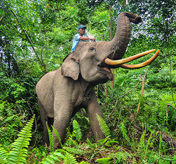
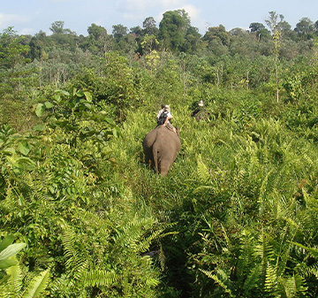
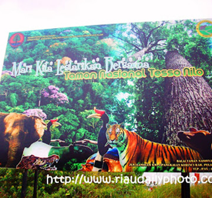

Aktivitas Yang Dapat Dilakukan

Melihat Gajah
Taman Nasional Tesso Nilo merupakan habitat alami bagi gajah Sumatera. Pengunjung dapat mengamati gajah liar di habitat alaminya dengan mengikuti tur yang dipandu oleh pemandu yang berpengalaman.
Jelajah Hutan
Taman Nasional Tesso Nilo memiliki berbagai jalur jelajah hutan yang dapat dilalui oleh pengunjung dengan tingkat kebugaran yang berbeda-beda.